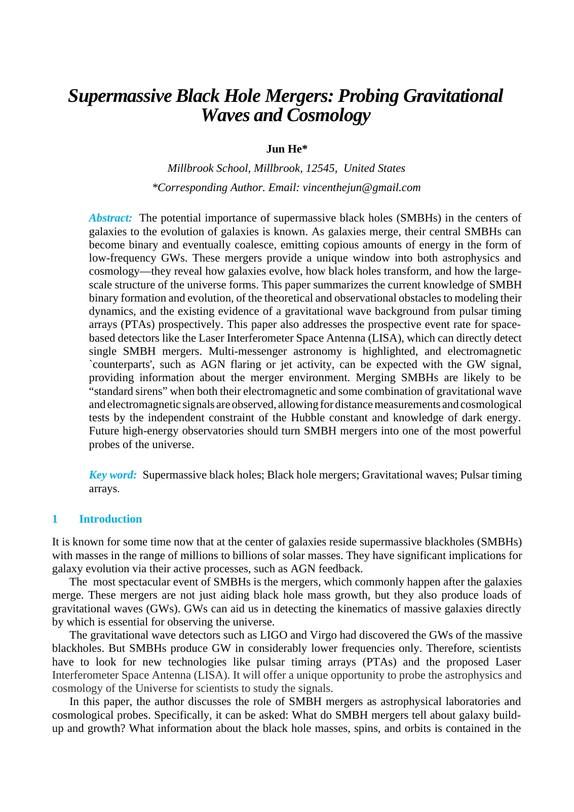

Mentored literature review
When black holes merge
Black-hole mergers, gravitational waves, and the search for complementary signals.

Open the complete review ↗The review in three questions
- 01
How do binaries evolve?
From galaxy mergers to the final-parsec problem.
- 02
How can we detect them?
Pulsar timing arrays and space-based gravitational-wave observations.
- 03
What can they tell us?
Multimessenger signals and standard-siren cosmology.
The takeaway
The review links pulsar timing, future space observatories and electromagnetic counterparts to complementary questions about mergers.
It is a literature synthesis, with no new detections, observational data or independent cosmological measurements.
Methods, mentorship & manuscript details
What I did
- Review binary evolution and the final-parsec problem.
- Compare the roles of pulsar timing arrays and future space observatories.
- Explore gravitational-wave and electromagnetic signals as complementary cosmological tools.
The manuscript
Supermassive Black Hole Mergers: Probing Gravitational Waves and Cosmology
Faculty mentor: Prof. Mark Vogelsberger · MIT Department of Physics
Accepted after double-blind peer review at the CONF-CIAP 2026 Symposium.
Reading PDF converted from the supplied Word manuscript; original wording and figures retained. Acceptance status is from the résumé.